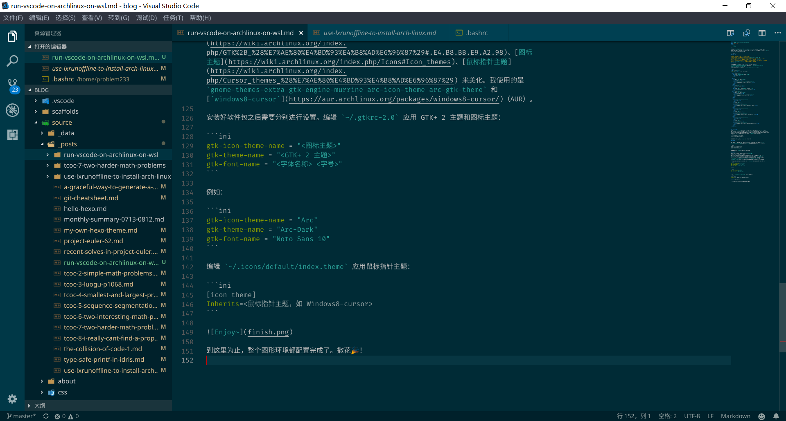

上次我们 用 LxRunOffline 安装了 Arch Linux，下一步就要在 WSL 之上构建开发环境了。开发环境的一个很重要的部分就是代码编辑器（或者 IDE），这里就要在 WSL 上安装运行 VSCode。
¶准备工作
- 本文假设你已经有基本的 Arch Linux 使用经验；
- 你需要在 WSL 上安装好 Arch Linux，并配置了 Arch Linux 中文社区仓库；
- 安装 VcXsrv。（虽然 VcXsrv 有个导致 VSCode 花屏的 bug，但是我不喜欢那个夹带了一堆我用不到的功能的 MobaXterm，所以就还是用 VcXsrv 了。这个 bug 的解决方案是：当花屏时，使用
Ctrl + Shift + P 输入 reload 回车重新加载窗口。）
¶安装字体
安装你喜欢的 字体。我的选择是 noto-fonts noto-fonts-cjk noto-fonts-emoji otf-fira-code。
安装字体后需要设置默认字体。编辑 ~/.config/fontconfig/fonts.conf：
1
2
3
4
5
6
7
8
9
10
11
12
13
14
15
16
17
18
19
20
21
22
23
24
25
26
27
28
29
30
31
32
33
34
35
36
37
38
39
40
41
42
43
44
45
46
47
48
49
50
51
52
53
54
55
56
57
58
59
60
61
62
63
64
65
66
67
68
69
70
|
<?xml version="1.0"?>
<!DOCTYPE fontconfig SYSTEM "fonts.dtd">
<fontconfig>
<match target="font">
<edit name="embeddedbitmap" mode="assign">
<bool>false</bool>
</edit>
</match>
<match>
<test qual="any" name="family">
<string>serif</string>
</test>
<edit name="family" mode="prepend" binding="strong">
<string>你喜欢的英文衬线字体，如 Noto Serif</string>
</edit>
</match>
<match target="pattern">
<test qual="any" name="family">
<string>sans-serif</string>
</test>
<edit name="family" mode="prepend" binding="strong">
<string>你喜欢的英文非衬线字体，如 Noto Sans</string>
</edit>
</match>
<match target="pattern">
<test qual="any" name="family">
<string>monospace</string>
</test>
<edit name="family" mode="prepend" binding="strong">
<string>你喜欢的等宽字体，如 Fira Code</string>
</edit>
</match>
<match>
<test name="lang" compare="contains">
<string>zh</string>
</test>
<test name="family">
<string>serif</string>
</test>
<edit name="family" mode="prepend">
<string>你喜欢的中文衬线字体，如 Noto Serif CJK SC</string>
</edit>
</match>
<match>
<test name="lang" compare="contains">
<string>zh</string>
</test>
<test name="family">
<string>sans-serif</string>
</test>
<edit name="family" mode="prepend">
<string>你喜欢的中文非衬线字体，如 Noto Sans CJK SC</string>
</edit>
</match>
<match>
<test name="lang" compare="contains">
<string>zh</string>
</test>
<test name="family">
<string>monospace</string>
</test>
<edit name="family" mode="prepend">
<string>你喜欢的中文等宽字体，如 Noto Sans Mono CJK SC</string>
</edit>
</match>
</fontconfig>
|
¶安装 VSCode
安装 visual-studio-code。使用 XLaunch 启动 VcXsrv，在倒数第二步勾选“Native openGL”。这里还建议勾选“Clipboard”并取消勾选“Primary selection”以获得最佳体验。（如果你担心每次都要手动勾选太麻烦的话，在最后一步点击“Save configuration”导出设置，以后就可以直接双击打开导出的设置运行 VcXsrv 了。）最后设置环境变量，在 ~/.bashrc 内添加以下内容：
1
2
|
export DISPLAY=localhost:0.0
export LIBGL_ALWAYS_INDIRECT=1
|
重启 BASH，然后就可以执行 code 运行 VSCode 了。
¶中文输入
WSL 内的输入与 Windows 的输入法并不通用，需要在 WSL 内单独安装输入法。安装 fcitx fcitx-gtk2 fcitx-configtool，然后执行 fcitx 即可启动输入法。在 fcitx 启动后运行 fcitx-configtool 进行设置。在 ~/.bashrc 内设置环境变量：
1
2
3
|
export GTK_IM_MODULE=fcitx
export QT_IM_MODULE=fcitx
export XMODIFIERS=@im=fcitx
|
重启 BASH，运行 code，就可以使用中文输入了。
¶美化主题
系统默认的外观非常丑陋。你可以安装自己的 GTK+ 2 主题、图标主题、鼠标指针主题 来美化。我使用的是 gnome-themes-extra gtk-engine-murrine arc-icon-theme arc-gtk-theme 和 windows8-cursor（AUR）。
安装好软件包之后需要分别进行设置。编辑 ~/.gtkrc-2.0 应用 GTK+ 2 主题和图标主题：
1
2
3
|
gtk-icon-theme-name = "<图标主题>"
gtk-theme-name = "<GTK+ 2 主题>"
gtk-font-name = "<字体名称> <字号>"
|
例如：
1
2
3
|
gtk-icon-theme-name = "Arc"
gtk-theme-name = "Arc-Dark"
gtk-font-name = "Noto Sans 10"
|
编辑 ~/.icons/default/index.theme 应用鼠标指针主题：
1
2
|
[icon theme]
Inherits=<鼠标指针主题，如 Windows8-cursor>
|

到这里为止，整个图形环境都配置完成了。撒花🎉！